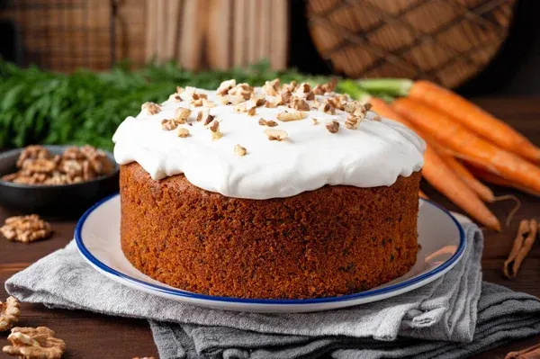

Home
Carrot Cake

Description
Le carrot cake est un gateau dont la particularite est l'ajout de carottes rapee.
L'ajout de cet ingredient permet d'ajouter une sucrosite naturelle appreciable.
Ingredients
- 260gr de farine
- 2 c.c de baking soda
- 1/2 c.c de sel
- 1/2 c.c de cannelle
- 300ml d'huile vegetale
- 200gr de sucre en poudre
- 1 c.c d'extrait de vanille
- 4 oeufs
- 300gr de carottes rapees
- 120gr de noix de pecan
- 70gr de raison
Etapes de Preparation
- Prechauffez le four a 180C
- Melangez ensemble les ingredients secs: farine, cannelle, baking soda, sell
- Melangez ensemble les ingredients liquides: huile, sucre, vanille et oeufs
- Melangez les 2 preparations en 3 fois
- Ajoutez les carottes rapees, noix et raisins
- Mettez la preparation dans un moule puis au four pendant 35-45 min
- Laissez repose pendant 15 min